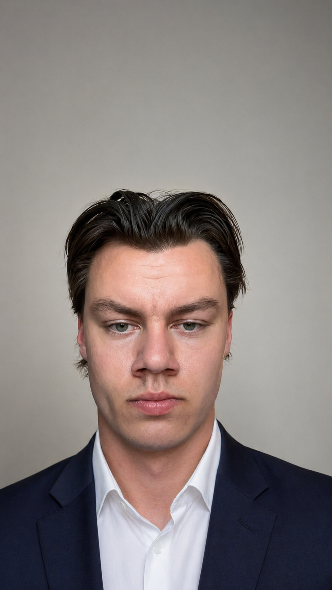
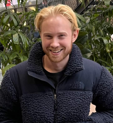
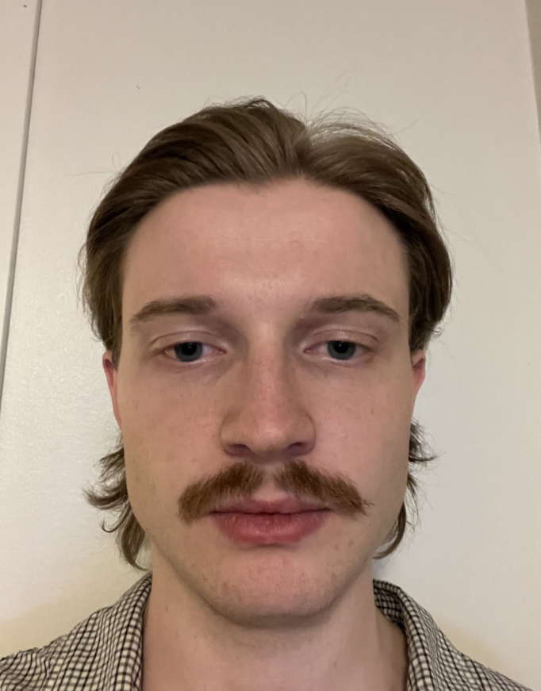

Kristian Stenersen
Om Meg
Engasjert IT-student med fokus på systemutvikling, brukeropplevelse og KI. Bruker KI aktivt for å effektivisere problemløsning. Teknologier jeg er kjent med er: C#, .NET, python, SQL, Git og Github, Jira, QGIS, Claude Code, Docker, HTML & CSS
Jeg er en sosial og utadvendt person som trives i team, og jeg er alltid ivrig etter å lære nye ting og ta på meg utfordringer. Jeg ser nå etter en praksisplass hvor jeg kan få brukt mine ferdigheter og bidra til spennende prosjekter og lære av de profesjonelle.
På fritiden holder jeg som regel på med enten fiske i skjærgården der jeg bor i Søgne eller så spiller jeg padel med venner.
Erfaring
- • Bachelor i IT og Informasjonssystemer (NÅ)
- • Prosjektarbeid og smidig metodikk (NÅ)
- • Førstegangstjeneste i Hæren (2023-2024)
- • Logistikkmedarbeider i Norwegian Concept (NÅ)

Mats Falck Lie
Om Meg
Hei, jeg heter Mats og er 25 år gammel. På fritiden liker jeg å trene og spille, og det tar opp en god del av tiden min.
Jeg har jobbet i Kiwi i snart 7 år, og de siste to av dem har jeg vært bryggeriansvarlig på Kiwi Lund, noe jeg har trivdes godt med.
Jeg er veldig interessert i AI og teknologi og synes det er skikkelig gøy å utforske hvordan det fungerer og hva man kan bruke det til. Jeg ønsker å lære mer om koding og hvordan man bruker AI som et praktisk verktøy i hverdagen, og jeg er åpen for å lære så mye som mulig.
Erfaring
- • Bachelor i IT og Informasjonssystemer (NÅ)
- • Kiwi bryggeriansvarlig (7 år)
- • Erfaring med logistikksystemer ASKO
- • Prosjektarbeid og smidig metodikk
Kasper Rustad
Om Meg
Hei! Jeg er Kasper (25), en teknologi-entusiast fra Ski som elsker å bygge ting fra bunnen av. Med erfaring fra både OsloMet og UiA har jeg fått brynet meg på alt fra anvendt datateknologi til informasjonssystemer, med et spesielt fokus på fullstack-utvikling. Planen videre er en master i cybersikkerhetsledelse for å virkelig kunne sikre fremtidens løsninger.
Arbeidshverdagen min hos Elkjøp har lært meg å forstå brukerens behov, mens bakgrunnen fra digital arkivering har gitt meg et skarpt øye for detaljer. Når jeg ikke koder eller studerer, finner du meg gjerne på treningssenteret, på reisefot eller foran skjermen med gode venner og dataspill. Jeg er nå på jakt etter en praksisplass hvor jeg kan få hendene på ekte problemstillinger og vise at jeg er en ressurs som både kan faget og trives i et sosialt arbeidsmiljø.
Teknologier jeg er kjent med er: C#, .NET, python, Jira, SQL, Git og Github, QGIS, Claude Code, Docker, HTML & CSS, Javascript, Supabase
Erfaring & Interesser
- •Bachelor i IT og Informasjonssystemer (NÅ)
- •Anvendt datateknologi - OsloMet 1,5 år
- • Erfaring med kundehåndtering og arkivering
- • Prosjektarbeid og smidig metodikk

Hans K. Steffenstorpet
Om Meg
Hei! Jeg er Hans Kristian (24) og er ifra Kongsvinger. Nå går jeg 2. året på IT- og informasjonssystemer ved UiA. Jeg har stor interesse for sikkerhet og trives godt å jobbe med logikk og feilsøking. Som person er jeg løsningsorientert og lærevillig, og jeg ser nå etter en praksisplass hvor jeg kan få brukt teorien min i praksis hos en bedrift. På fritiden liker jeg å trene, spille dataspill og ha det gøy med venner.
Teknologier jeg er kjent med er: Python, C#, Scrum, Prosjektledelse, Jira, GitHub, SQL og Figma
Erfaring
- • Bachelorgrad i IT- og informasjonssystemer (UiA)
- • Prosjektarbeid i teammiljø
- • Arbeid og studie innen helsesektoren